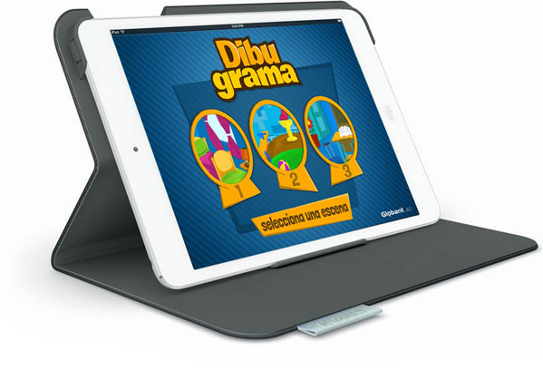

Proyecto Innovador
III Congreso Iberoamericano sobre el Síndrome de Down
Desarrollo de aplicaciones para niños y jóvenes con discapacidad.
Nuestro objetivo es ofrecer tecnología para la inclusión. Desarrollamos proyectos tecnológicos innovadores que facilitan el aprendizaje de las personas, contemplando los aspectos necesarios para quienes tienen alguna discapacidad.
Nuestras aplicaciones son inéditas en el mercado argentino y latinoamericano.
Todas se descargan sin costo, para que lleguen a quienes las necesitan.
Se instalan en cualquier dispositivo móvil de última generación.
Desarrollamos proyectos tecnológicos innovadores que tienen en cuenta lo que necesitan las personas con discapacidad para aprender.
Usamos la tecnología para resolver situaciones de la vida cotidiana y promover una mejor calidad de vida, para ellos y para su familia.
Implementamos capacitación y difusión sobre las TIC en el ámbito de la discapacidad.
Desde que empezamos, muchas empresas, ONG, instituciones académicas y voluntarios nos ayudaron a desarrollar las aplicaciones, y seguimos trabajando juntos a diario. Estos son los premios y reconocimientos que recibimos en estos años.
III Congreso Iberoamericano sobre el Síndrome de Down
World Congress on Information Technology (WITSA)
ASDRA, Asociación Síndrome de Down de la República Argentina
Premio CEMEX-TEC
Legislatura Porteña
Honorable Cámara de Diputados de la Nación
Nobleza Obliga
Somos un grupo de profesionales de distintas áreas que trabaja en conjunto para integrar la tecnología informática a la educación de niños y jóvenes con discapacidad. Nuestra energía está puesta en lograr que la tecnología sea una herramienta de inclusión.
La tecnología informática evoluciona con los años, pero muchos desarrolladores no tienen en cuenta los matices que enfrentan los docentes cuando trabajan en el aula con chicos que tienen una discapacidad puntual.

A diferencia de una computadora con mouse, la tablet es un dispositivo muy intuitivo de usar. Esa es una de las principales ventajas de llevar las aplicaciones a la enseñanza.
Las herramientas son muy amigables y permiten a los chicos desarrollar habilidades a la par de sus compañeros, y convertirse en nativos digitales, algo imprescindible en el mundo de hoy.
Desde muy temprana edad, los chicos se conectan con situaciones de la vida cotidiana, reales y simuladas, que desarrollan habilidades cognitivas, sociales, de comunicación y de autoabastecimiento. Las actividades también integran a la familia.